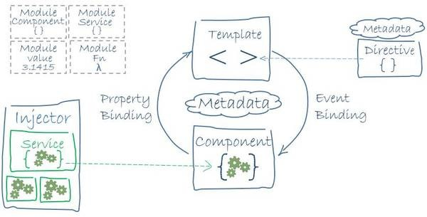

模板基本定义了你的应用长啥样，长得好不好看得有人看着，组件就负责管理这些模板。长得好看没用那不就成了花瓶了么，所以还需要服务来给应用添加一些逻辑，这些东西东一块西一块的乱七八糟还真不行，我们还需要模块来打包所有的组件、服务等等。所以说，模块就是用来打包的。一个应用程序有很多模块打的包，一层一层的，最开始那个就叫做根模块。我们通过引诱（其实是引导吧）根模块来启动程序。  刚才提到了根模块，是用来启动程序的。没有根模块，再好的程序也跑不起来。所以模块很重要很重要。Angular的应用，都是模块化的。每个feature特性都有自己的子模块，无论是子模块还是根模块定义的结构都差不多。我们可以把模块看成一个行李箱，里面装满了各种东西。包括declaration、imports、providers等。declaration用来放各种小零件，包括组件、指令、管道等。imports是导入其他的模块。providers用来盛放各种service。
下一步